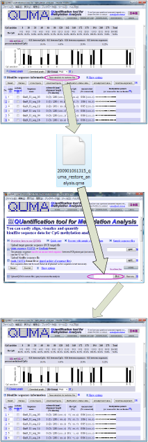

SaveとRestoreについて

この機能を使えば、解析の状態を含めてデータを保存することができます。また、データを他の人に送る場合にも便利です。
解析結果ページで、"Save analysis to restore file"ボタンをクリックしてデータファイルをダウンロードします。
データファイルを自分のパソコンに保存します。
ファイル名は変更可能ですが、拡張子".qma"は変更しないで下さい。
解析を復元する場合は、データファイルをQUMAのホームページからアップロードします。
解析結果が復元されます。